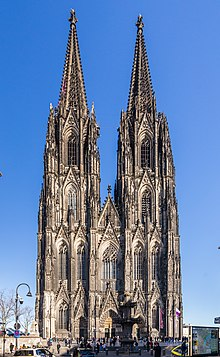

Arhitectura
Domul din Köln
| EXTERIOR | INTERIOR |
|---|---|
| Designul planului de bază al Catedralei din Köln s-a bazat îndeaproape pe cel al Catedralei din Amiens, la fel ca și stilul și proporția de înălțime a navei centrale. Planul este în formă de Cruce Latină, așa cum se întâmplă de obicei cu catedralele gotice. Are două culoare de o parte și de alta, care ajută la susținerea uneia dintre cele mai înalte bolți gotice din lume, fiind aproape la fel de înaltă ca cea a Catedralei Beauvais, multe dintre ele s-au prăbuşit. În exterior, împingerea exterioară a bolții este luată de contraforturi zburătoare în manieră franceză. Capătul estic are o singură ambulatorie, al doilea culoar rezolvându-se într-o cavetă de șapte capele radiante. |
Pe plan intern, corul medieval este mai variat și mai puțin mecanic în detaliile sale decât clădirea din secolul al 19-lea. Acesta prezintă un aranjament în stil francez de arcade foarte înalte, o galerie delicată îngustă de triforium luminată de ferestre și cu o tracery detaliată care se îmbină cu cea a ferestrelor de mai sus. Ferestrele clerestory sunt înalte și păstrează niște sticlă figurativă veche în secțiunile inferioare. Întregul este unit de arborii înalți care se mătură neîntrerupt de pe podea până la capitalele lor la primăvara bolții. Bolta este de aranjament simplu quadripartit. |